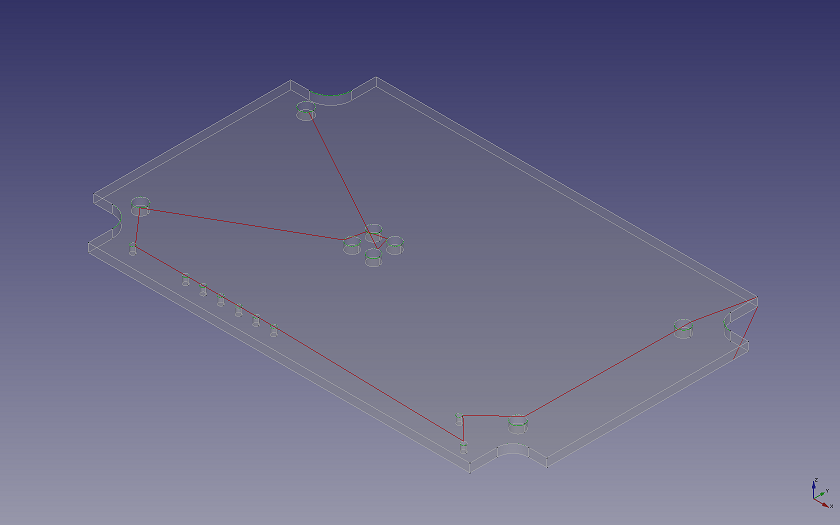

CAM Parcours à partir de formes
| Pour utiliser cette fonctionnalité d’activation expérimentale, vous devez activer les fonctionnalités expérimentales |
| This page is incomplete; it was marked as unfinished on the wiki. |
 CAM Parcours à partir de formes
CAM Parcours à partir de formes
- Menu location
-
- Workbenches
- Default shortcut
-
None
- Introduced in version
-
-
- See also
-
None
Description
La commande  Parcours à partir de formes ne correspond pas au flux de travail actuel de CAM. Pour cette raison, il est placé dans les fonctions expérimentales.
Parcours à partir de formes ne correspond pas au flux de travail actuel de CAM. Pour cette raison, il est placé dans les fonctions expérimentales.
Cet outil génère des parcours d’outils à partir des bords d’un objet CAM.
Les parcours d’outils ne sont pas compensés pour le rayon d’outil. Aucun contrôleur d’outil n’est associé aux parcours d’outils générés.

Utilisation
Toutes les arêtes associées à la sélection du modèle 3D seront incluses.
-
Sélectionnez les arêtes en sélectionnant l’objet entier à partir de la vue 3D ou de l’arborescence du document, ou en sélectionnant des arêtes, ou par des faces à partir de la vue 3D.
-
Appuyez sur le bouton
 Créer un parcours à partir d’une forme du contrôleur d’outils.
Créer un parcours à partir d’une forme du contrôleur d’outils.
Le parcours résultant de l’outil est ajouté en dehors de la tâche de CAM.
Options
Toutes les options fournies sont disponibles uniquement à partir de la vue FromShape.Property.Data et incluent :
-
Axe de rétraction
-
Hauteur de rétraction
-
Reprendre la hauteur
-
Vitesse d’avance
-
Vitesse d’avance verticale
Script
Voir aussi : Débuter avec les scripts FreeCAD.
DocString Info
Renvoie un objet Path à partir d’une liste de formes.
-
shapes : liste d’entrée des formes.
-
start (Vector ()) : position de départ du flux et sert également d’indicateur d’entrée du parcours.
-
return_end (False) : si mis à True, retourne le tuple (path, endPosition).
-
arc_plane(1) : 0=None, 1=Auto, 2=XY, 3=ZX, 4=YZ, 5=Variable. Plan de dessin d’arc, correspondant à G17, G18 et G19.
-
Si ce n’est pas "None", les polylignes de sortie seront transformées pour s’aligner avec le plan sélectionné et le G-code correspondant sera inséré.
-
"Auto" signifie que le plan est déterminé par le premier plan d’arc rencontré. Si le plan trouvé ne s’aligne sur aucun plan G-code, le plan XY est utilisé.
-
"Variable" signifie que le plan de l’arc peut être modifié pendant le fonctionnement pour s’aligner sur l’arc rencontré.
-
-
sort_mode(1): 0=None, 1=2D5, 2=3D, 3=Greedy. Mode de tri des polylignes pour optimiser la distance de déplacement.
-
« 2D5 » fait exploser les formes en polylignes et regroupe les formes par leur plan. La position de départ choisit le premier plan pour commencer. L’algorithme triera ensuite dans le plan, puis passer au prochain plan le plus proche.
-
« 3D » ne fait aucune hypothèse de planarité. Le tri est effectué sur l’espace 3D.
-
« Greedy »"" comme « 2D5 » mais essaiera de minimiser les déplacements en recherchant le parcours le plus proche ci-dessous la couche de fraisage en cours. Le parcours dans la couche inférieure n’est sélectionné que si la distance de déplacement est dans la valeur indiquée dans le « seuil ».
-
-
min_dist(0.0) : distance minimale pour les nouvelles polylignes générées. Les polylignes peuvent être cassées si l’algorithme juge nécessaire. Mettre à zéro pour éviter de casser les polylignes.
-
abscissa(3.0) : contrôle l’échantillonnage des sommets sur la polyligne pour la recherche du point le plus proche. L’échantillonnage est fait en utilisant OCC GCPnts_UniformAbscissa.
-
nearest_k(3): les k sommets d’échantillonnage les plus proches sont pris en compte lors du tri.
-
orientation(0) : 0=Normal, 1=Reversed. Appliquer l’orientation de la boucle.
-
« Normal » signifie sens inverse horaire pour les polylignes extérieures lorsque vous regardez dans le sens de l’axe positif et sens horaire pour les polylignes intérieures.
-
« Reversed » signifie l’inverse.
-
-
direction(0): 0=None, 1=XPositive, 2=XNegative, 3=YPositive, 4=YNegative, 5=ZPositive, 6=ZNegative. Appliquer la direction du parcours ouvert.
-
threshold(0.0) : si les points d’extrémité de deux polylignes sont séparés à l’intérieur de ce seuil, ils sont considérés comme connecté. Vous souhaiterez peut-être définir ce paramètre sur le diamètre de l’outil pour maintenir l’outil vers le bas.
-
retract_axis(2) : 0=X, 1=Y, 2=Z. Axe de retrait de l’outil.
-
retraction(0.0) : coordonnée absolue de rétraction de l’outil le long de l’axe de rétraction.
-
resume_height(0.0) : lors du retour de la dernière rétraction, cela donne la hauteur de la pause par rapport à la valeur Z du mouvement suivant.
-
segmentation(0.0) : divise les longues courbes en segments de cette longueur. Un cas d’utilisation est pour le niveau automatique de PCB, de sorte que plus de points de correction peuvent être insérés.
-
feedrate(0.0) : vitesse d’avance du mouvement normal.
-
feedrate_v(0.0) : déplacement vertical uniquement (par pas vers le bas).
-
verbose(true) : si mis à true, chaque mouvement G-code contiendra les coordonnées complètes et l’avance.
-
abs_center(false) : utilise le mode de centre d’arc absolu (G90.1).
-
preamble(true) : émettre des préambules.
-
deflection(0.01) : déviation pour la discrétisation des courbes non circulaires. Egalement utilisé pour discrétiser les courbes circulaires lorsque vous "explosez" la forme pour les opérations sur les polylignes.
Exemple :
shapes = [Box.Shape]
Path.fromShapes(shapes, start=Vector(), return_end=False, arc_plane=1, sort_mode=1, min_dist=0.0, abscissa=3.0, nearest_k=3, orientation=0, direction=0, threshold=0.0, retract_axis=2, retraction=0.0, resume_height=0.0, segmentation=0.0, feedrate=0.0, feedrate_v=0.0, verbose=True, abs_center=False, preamble=True, deflection=0.01)